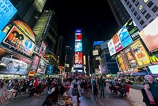
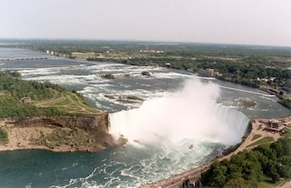
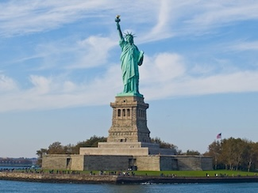

| 회원가입 |  | 타임스퀘어는 미국 뉴욕 미드타운 맨해튼에 있는 유명한 상업적 교차로로, 웨스트 42번가와 웨스트 7번가가 합쳐져 만난 세븐스 에비뉴와 브로드웨이가 교차하는 일대를 말한다. 타임 스퀘어는 브로드웨이의 극장가가 환하게 빛나는 중심지이고, 세계에서 가장 붐비는 보행자용 교차로 중 한 곳이며, 세계 엔터테인먼트 산업의 중심지로 "세계의 교차로", "우주의 중심", "불야성의 거리"라는 별명으로도 잘 알려져 있다. |
| 문의게시판 | ||
타임스퀘어 | ||
| 지금 미국의 날씨 |  | 미국 뉴욕주 나이아가라 폴스와 캐나다 온타리오주 나이아가라 폴스의 국경을 이루는 나이아가라 강에 있는 폭포이다. 이리호에서 흘러나온 나이아가라 강이 온타리오호로 들어가는 도중에 형성된 대폭포이다. |
나이아가라 폭포 | ||
|  | 자유의 여신상은 미국 뉴욕 리버티섬에 있는 건축물로, 뉴욕을 상징하는 대표적인 건축물이며, 세계를 밝히는 자유라는 이름으로, 프랑스가 19세기 말에 미국의 독립 100주년을 축하하기 위해 제작한 동상이다. | |
자유의 여신상 |